Tecnología y magia
↗Slimefun
Máquinas, energía, dioses, dimensiones y el endgame más profundo.
/slimefun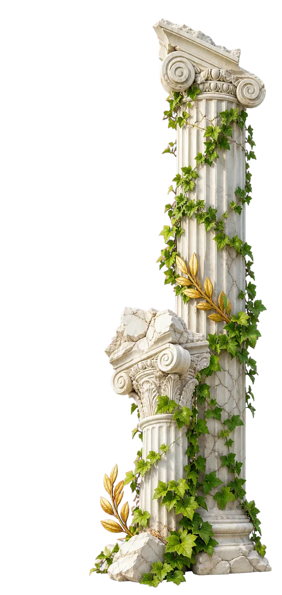
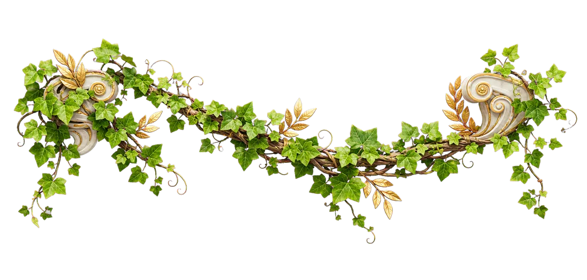
Minecraft Java + Bedrock · Chile
Supervivencia técnica, magia, máquinas, islas y experimentación dentro de cinco mundos conectados por una sola comunidad.
Drakes ahora
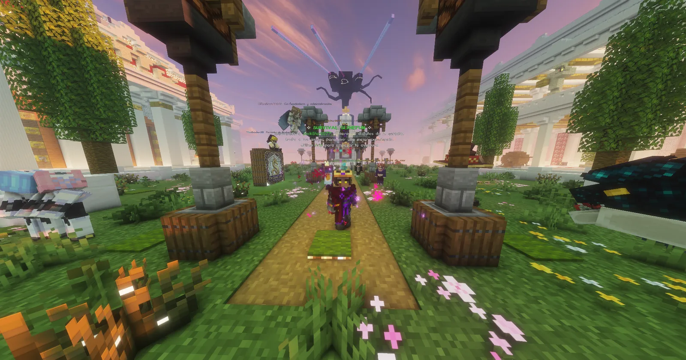
Conoce DrakesCraft
Aquí una base puede convertirse en fábrica, templo, observatorio o ciudad. Slimefun, magia, dimensiones, jefes y sistemas propios amplían Minecraft sin borrar la historia que construyes bloque a bloque.
Cinco formas de jugar
Cada modalidad tiene su ritmo, su inventario y su progreso. Puedes cambiar de ruta sin cambiar de servidor.
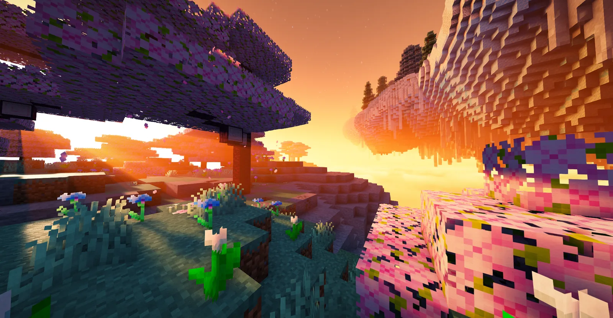
Máquinas, energía, dioses, dimensiones y el endgame más profundo.
/slimefunSupervivencia vanilla, Terralith, hogares y protecciones. Sin Slimefun.
/clasicoEmpieza con lo justo y transforma el vacío con Slimefun.
/skyblockUn bloque infinito que evoluciona contigo, fase tras fase.
/oneblockPrototipa máquinas y redes sin comprometer tu survival.
/warp laboratorio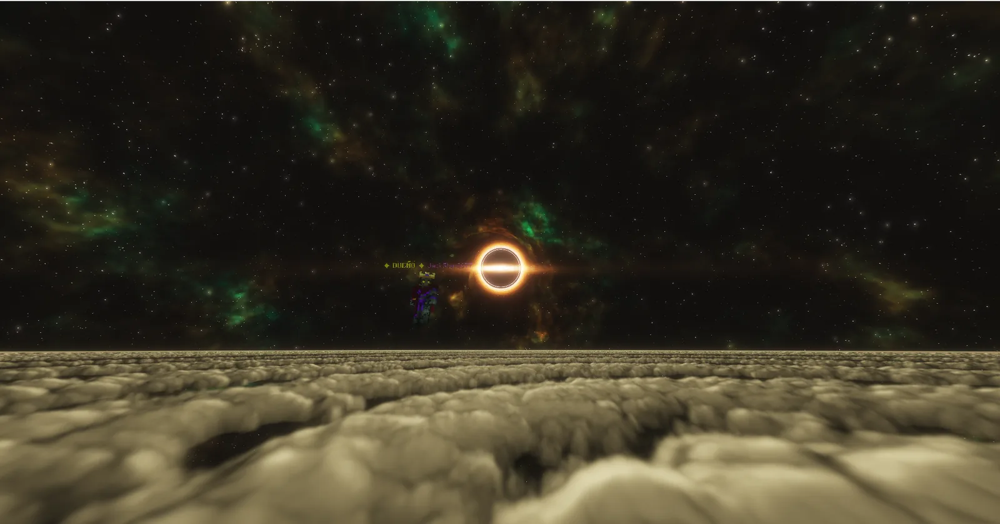
Nuevo · Laboratorio
Mundo creativo, maquinaria, reactores, prototipos y experimentación. Un espacio aislado para comprobar ideas antes de llevarlas a tu base.
/sf cheatInvestigación temporalPruebas sin explosión real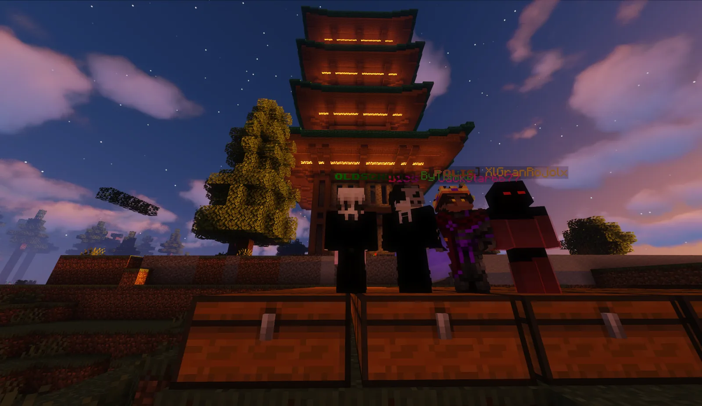
El legado de DrakesCraft
TheSavior22 crea DrakesCraft y define su primera identidad.
El proyecto pasa a JackStar6677, que conserva su historia y asume su evolución.
Slimefun, Odysseia, infraestructura y sistemas propios amplían el mundo.
Cinco modalidades. Una comunidad. DrakesCraft sigue creciendo.
Comunidad activa
Discord reúne anuncios, soporte, ideas y a quienes están levantando su próximo proyecto dentro del servidor.
Entrar a DiscordApoya el mundo
La tienda existe para sostener DrakesCraft. Todo se entrega mediante el checkout seguro de Tebex y ningún pase se renueva solo.
Las personas detrás
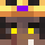
Dueño principal y arquitecto de DrakesCraft. Lidera el desarrollo de plugins, la infraestructura de red, la optimización técnica y la evolución del mundo.
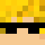
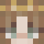
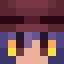
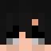
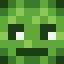
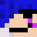
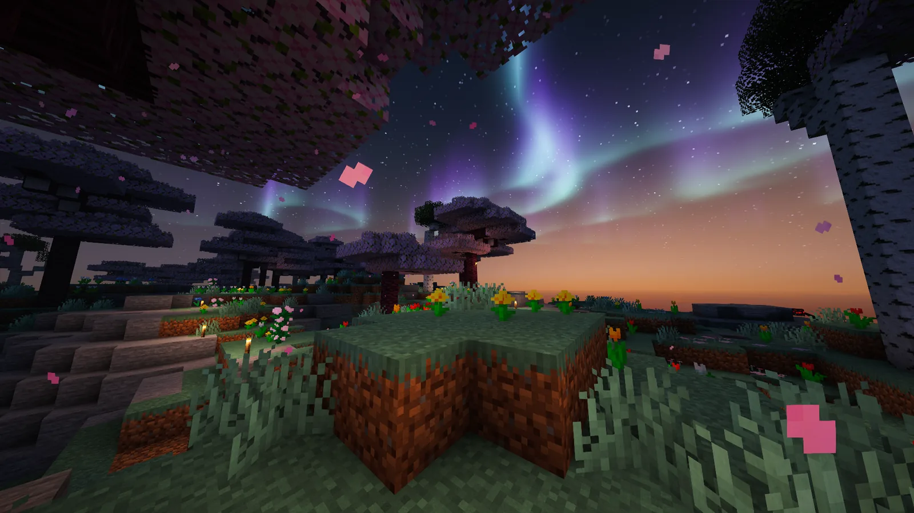
Tu historia empieza aquí
Cinco mundos. Decenas de sistemas. Tu partida no tiene por qué parecerse a ninguna otra.
mc.drakescraft.cl